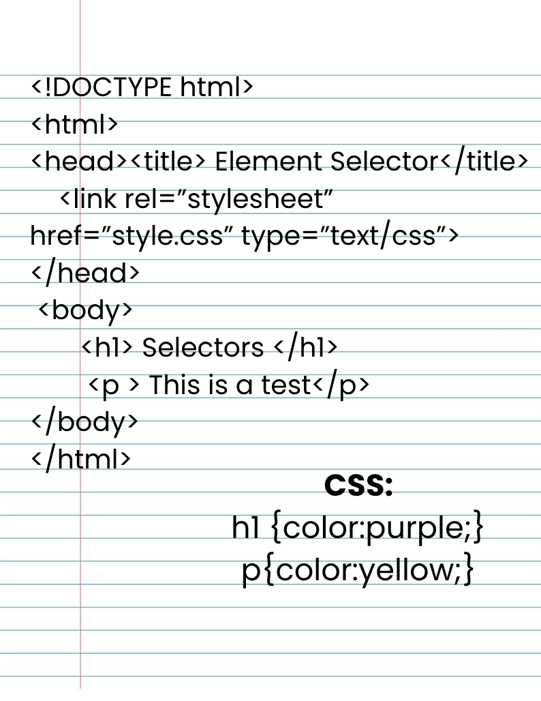
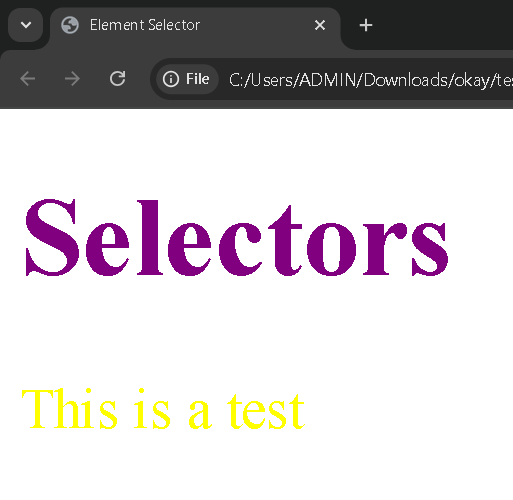

Lesson 5: CSS Selectors
To "find" or "select" the HTML elements you wish to style, you can use CSS selectors.
There are 6 types of CSS Selectors.
- Class Selector
- Element Selector/Tag Selector
- ID Selector
- Universal Selector
- Group Selector
- Attribute Selector
- Element Selector/Tag Selector
- - Applies CSS to any selected HTML element (p, div, h1, etc.)
- - Example: p {font-size: 20px; color: yellow;}
- ID Selector
- - Applied to one element
- - Defined by # and uses ID attribute and uses CSS
- - Example HTML code: <p id="header"> Example </p>
- - Example CSS code: #header { background-color:yellow; color:purple; }
- Universal Selector
- - Selects very single element on an HTML page
- - Defined by (*)
- - Example CSS code: * {color:green;}
- Group Selector
- - Can choose several elements and applies the same style to all of them
- - Example CSS code: h1, h2 { color: purple; font-family: Verdana}
- Attribute Selector
- - Elements are chosen by the attribute selector according to particular attribute values.
- - Defined by syntax: Element[attribute]
- - Example CSS code: input[type="text"]{ background-color:purple; color:yellow;}
In this lesson, I learned that CSS selectors are very important because they tell the browser which elements to style. Each type of selector has its own purpose and makes it easier to design a webpage efficiently. The class and ID selectors are useful for targeting specific elements, while the universal and group selectors help apply styles to many elements at once.

